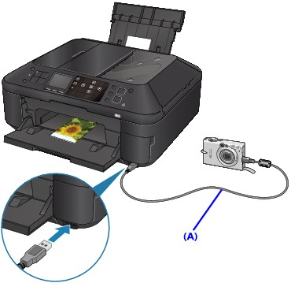

You can connect a PictBridge compliant device such as a digital camera, camcorder, or mobile phone connect to the machine using a USB cable recommended by the device's manufacturer, and print recorded images directly without using a computer.
 Important
Important-
Do not use the USB cable longer than around 10 feet / 3 meters to connect any PictBridge compliant device to the machine since it may affect the operation of other peripheral devices.
 Note
Note-
When printing photos with the PictBridge compliant device connected to the machine, we recommend the use of the AC adapter supplied with the device. If you are using the device battery, be sure to charge it fully.
-
Depending on the model or brand of your device, you may have to select a print mode compliant with PictBridge before connecting the device. You may also have to turn on the device or select Play mode manually after connecting the device to the machine.
Perform necessary operations on the PictBridge compliant device before connecting it to this machine according to instructions given in the device's instruction manual.
-
Make sure that the machine is turned on.
-
Load paper.
-
Make sure that the PictBridge compliant device is turned off.
-
Connect the PictBridge compliant device to the machine using a USB cable (A) recommended by the device's manufacturer.
The PictBridge compliant device turns on automatically.
If your device does not turn on automatically, turn it on manually.
When machine is correctly connected to the device, the message that the machine is connected will be displayed on the LCD of the device. Refer to the device's instruction manual.
 -
Specify the print settings such as the paper type and layout.
You can perform settings using the menu on the LCD of your PictBridge compliant device. Select the size and type of paper that you loaded in the machine.
 Settings on a PictBridge Compliant Device
Settings on a PictBridge Compliant DeviceIf your PictBridge compliant device does not have a setting menu, change the setting from the machine.
-
Start printing from your PictBridge compliant device.
Important-
Never disconnect the USB cable during printing unless when explicitly allowed to by the PictBridge compliant device. When disconnecting the USB cable between the PictBridge compliant device and machine, follow the instructions given in the device's instruction manual.
-